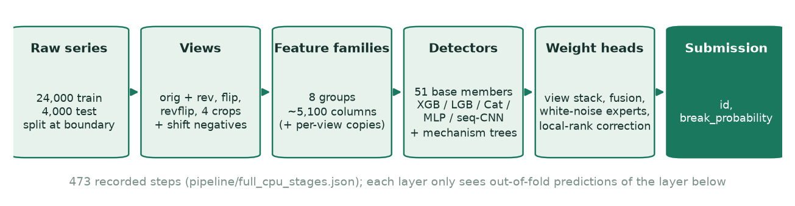
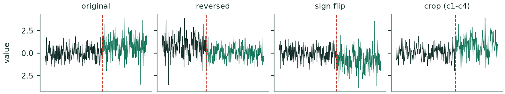
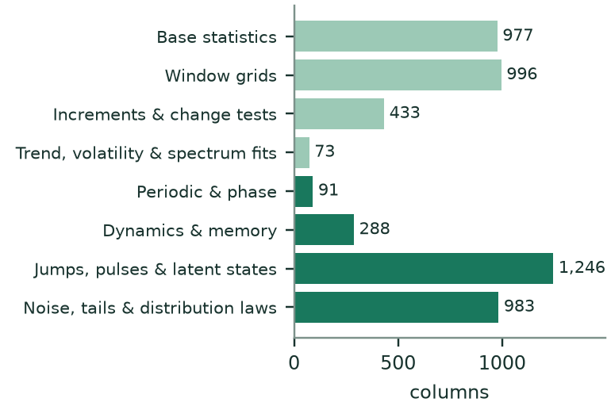
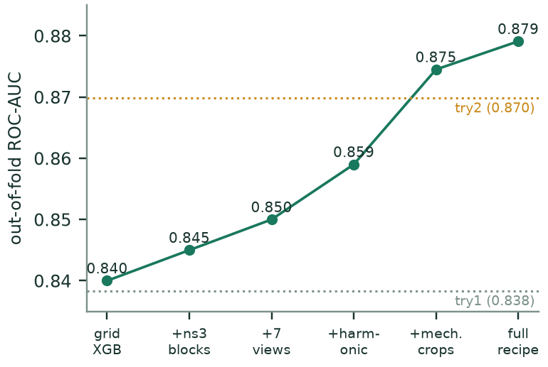
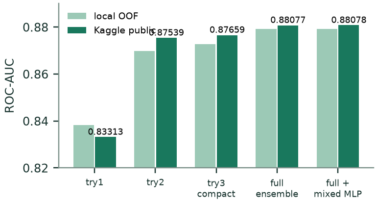

blitzict/ku-sbb-2026 · designated Kaggle submission 58102347 (0.88078)
pipeline/full_cpu_stages.json (473 steps). Each layer is trained only on out-of-fold outputs of the layer below.Data and views. There are 24,000 labelled training series (12,000 with a break) and 4,000 test series. Each series is split into a "before" and an "after" part at its boundary, and almost every feature compares the two parts. To make the detectors robust, we build seven extra views of every series: time-reversed, sign-flipped, reversed and flipped, and four random crops around the boundary (Figure 2). Boundary-shift negatives and real half-segments add training rows. Augmented rows always stay in the same fold as their source series. At test time, the view models average their predictions over the views.

Feature families. The recipe uses about 40 feature tables. Table 1 groups them into eight families. The first four are classic two-sample statistics. The last four come from a mechanism view: they ask how the series could have changed (phase, memory, jumps, latent state, noise law) and score how likely that change is under each explanation. The full list is in FEATURES.md.
| Family | What it measures (before vs after the boundary) | Columns |
|---|---|---|
| Total distinct columns (before the per-view copies) | {{FAMILY_TOTAL}} | |


Detectors. These are the 51 base members:
train_cv.py, 44 fits).train_var.py).nn_var.py, nn_xpu.py).nn_seq.py).The mechanism specialists are nested XGBoost models (nested_tree/crop/rank.py, wnlaw_nested*.py). They use the mechanism features plus noise-law priors, and each prior is estimated inside the training fold only. On its own, the crop specialist MECH3C12V reaches 0.874.
Weight-space heads. Instead of one big meta-model, we edit and recombine existing weights in small, regularised steps:
neural_head_edit.py) and learned per-view weights.Base members use five stratified folds (seed 7, plus the recorded seeds for repeated members). The later readouts are refitted over five outer folds for each of six seeds (7, 29, 0, 123, 2024, 11041), with inner folds wherever a layer needs its own out-of-fold inputs. The headline AUC is the pooled seed-7 out-of-fold score over all 24,000 series. Learned preprocessing, such as rank references, quantile transforms and noise-law priors, is fitted on training rows only, and test labels are never used. Limitation: feature lists and settings were chosen while looking at the same training set, so the local score carries some selection optimism. It is a research validation score, not an untouched holdout.
| Submission | Local OOF | Kaggle |
|---|---|---|
| try1: v4, XGBoost + LightGBM, 977 base features | 0.83835 | 0.83313 |
| try2: one LightGBM, 3,625 statistical + mechanism features | 0.86987 | 0.875 |
| Full 0.879 ensemble | 0.87911 | 0.88077 |
| Full ensemble + synthetic-data MLP correction | 0.87910 | 0.88078 |
| try3: top-100 features + fold-wise law prior, 2 LGB + 1 XGB blend | 0.87271 | 0.87659 |
| try4: full recipe retrained from raw files (in progress) | pending | – |

The biggest single jump came from detecting coherent oscillations: a series can change its phase or amplitude while its mean and variance stay the same. Adding these detectors moved one ensemble from 0.853 to 0.867. Later gains came from the trend and pulse handling, the noise-law priors, crops that keep track of their source series, and the constrained residual heads. The hardest remaining cases are breaks that look like white noise. Of 821 historically missed positives, the final ensemble recovers 88 at a 20% false-positive rate, compared with 42 for the earlier 0.871 model.
The original models were trained on our own GPUs, but many intermediate models were saved only as predictions. To make the result reproducible, we rebuilt the whole recipe so that it runs from the four raw competition files:
pipeline/legacy_cpu/ (172 files), and every step's arguments, inputs and outputs are recorded in the stage manifest.pipeline/train_gpu.py runs independent steps in parallel and sends model fits through gpu_launch.py: XGBoost runs on CUDA (RTX 5070) and the torch nets run on the Intel Arc. The script files on disk stay unchanged, so their recorded hashes stay valid.python train_087910_cpu.py --data data --work cpu_run (or python -m pipeline.train_gpu ...) trains the full recipe. python -m pipeline.predict_new --models cpu_run --series test_series.parquet --csv submission.csv scores new series. The designated CSV is written by python designated_088078/predict.py --data data --out submission.csv, and try2/predict_compact.py and try1/v4.py predict do the same for the simpler models.
blitzict/ku-sbb-2026)| Item | Where | Status |
|---|---|---|
| try1: v4 models, train and predict code | try1/, pipeline/features_v4.py | Saved models; predicting from raw data reproduces the submitted CSV exactly |
| try2: 5 LightGBM fold models, train and predict code, notebook | try2/ | Saved models; Kaggle 0.875; raw-series prediction matched exactly |
| try3: compact model (100 features + 36 prior columns per fold, 15 saved models) | try3/ | Saved models; Kaggle 0.87659; predicting from raw data matched exactly on 200 series |
| try4: full 0.879 recipe (473 steps, 172 scripts) | pipeline/, train_087910_cpu.py, try4/ | Code complete; retraining with saved models in progress |
| GPU runner (RTX 5070 + Intel Arc, parallel steps) | pipeline/train_gpu.py, gpu_launch.py | Running |
| Saved-model inference for the full recipe | pipeline/inference/, predict_new.py, inference.ipynb | Base and mechanism models checked on synthetic data; late heads still need adapters |
| Feature catalogue and training notebook | FEATURES.md, CPU_087910.ipynb | Done |
| Designated 58102347 (0.88078): final layer, saved inputs, MLP fold models | designated_088078/ | predict.py rewrites the submitted CSV exactly (same SHA-256); the MLP part reruns from raw series. Upstream detectors replay saved outputs; their fresh retrain is try4 |
Libraries: NumPy, SciPy, pandas, PyArrow, scikit-learn, XGBoost, LightGBM, CatBoost, PyTorch (CUDA / XPU), joblib and Optuna (development tuning only). Only the competition files were used: no outside data, no pretrained models and no test labels. The synthetic series used in some experiments were generated from training negatives. AI assistance: Claude Opus 5.5 (Claude Code) was used to implement ideas we had and created. It optimised the training for our two-GPU setup (RTX 5070 + Intel Arc), and later reconstructed the extracted features as a CPU-only run. We chose the ideas and the features, reviewed the results and decided what to submit.